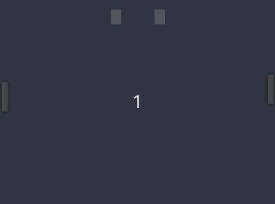

Worth Mentioning
Track your progress with an end-to-end project.
Having an end-to-end project that uses the project you are developing helps you discover and prioritize issues.
Initially we began with Pong, then we became more ambitious:
Week 1: Compile
$ wasm-pack build -- --features "wasm gl"
# ..
[INFO]: :-) Done in 37.87s
[INFO]: :-) Your wasm pkg is ready to publish at ./pkg.
Week 2: Runs 1 frame

Week 3: It moves

Week 4: Audio
Forget what you know about programming for a moment.
In the following sequence canvas.width() is a getter. Where is canvas.set_attribute("width", 640) called?
- A
canvas.width()-> 800- B
canvas.width()-> 800- C
canvas.width()-> 640- D
Answer
B. See amethyst#2247 (comment)
canvas.width()-> 800canvas.set_attribute("width", 640);canvas.width()-> 800- Do who-knows-what with Gpu Device and contexts
canvas.width()-> 640
If you want help, create an environment where it is easy to help.
Effort in the first week was solely to make it easy for people to see what issues are ready to be work on.
- The difficulty of nearly every issue was pretty high, but every week new issues were created.
- Really fortunate that
@chemicstrywasn't phased by the level of difficulty, and got us through the multithreading issue. - Within a day after posting two good starter issues, they were fixed by someone new.
If you have the option to begin from scratch, choose that.
Retrofitting browser WASM support – asynchronous event handling model – to an existing application that is designed for synchronous execution is somewhat messy.
There is also a development focused project report.
Online at https://amethyst.github.io/wasm_rush_report/.
This covers:
- How the project was managed.
- Project implementation time line.
- Links to forks, issues, and PRs that made it back to upstream repositories.
- Future work.